OpenTSN 风格实现 · 纯逻辑可综合 · 14 模块 / 12 分层 testbench / 12/12 PASS
本报告对应设计文档第 8 节：含架构数据流、状态机、真实仿真波形、同步前后对比、模块职责、OpenTSN 对照、创新点、子模块因果链。
本工程是一个纯 FPGA 逻辑实现：所有模块（PHC / HTSU / TC / Pdelay / BMCA / Servo / MAC 胶合 / CDC FIFO / TX 生成 / MAC 适配）均为可综合 Verilog，在单芯片内完成 gPTP 时间同步；验证侧采用 iverilog 分层 testbench 作为仿真兜底。单端口由 gptp_top 集成，多端口由 gptp_switch 用 generate 例化 N 份并共享一个 PHC，输出的 GM 时间可供给片上 802.1Qbv TAS 调度单元消费。
同步的核心是一个帧驱动闭环：报文从真实 MAC 字节流进入，经异步 FIFO 跨时钟域、帧解析、时间戳打标、透明钟改写、伺服校正，最终由 GM 端口主动出帧。下文给出单端口与多端口两条数据流。
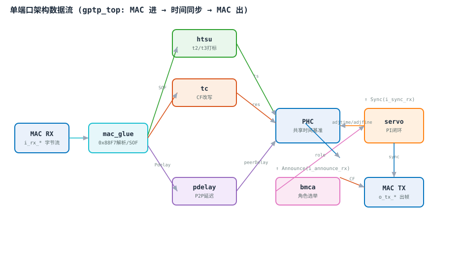
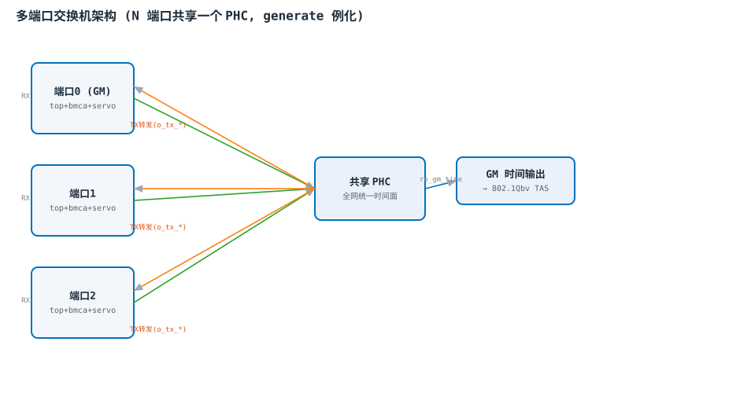
mac_glue 识别 0x88F7 → 异步 FIFO 跨到系统域 → HTSU 在 SOF 硬打戳 (t2/t3) → TC 累加 residence 到 correctionField → Pdelay 测 P2P 链路不对称 → BMCA 选 GM → Servo 用 Sync offset 闭环调 PHC（adjtime/adjfine）→ 统一时间面经 TX 出帧（owner 主动发，非 owner 透传）。全部时序模块严格采用用户 Verilog 铁律：状态寄存器块仅更新 state_c；组合块用 case 计算 state_n（default=P_ST_IDLE）；输出块单信号 if-else。状态常量以 P_ST_ 前缀 + 独热编码，跳转条件用独立 p_st_<src>2p_st_<dst>_start wire 声明。状态机的正确性直接关系到时间戳能否在正确拍数锁存，是整条同步链路的时序地基。
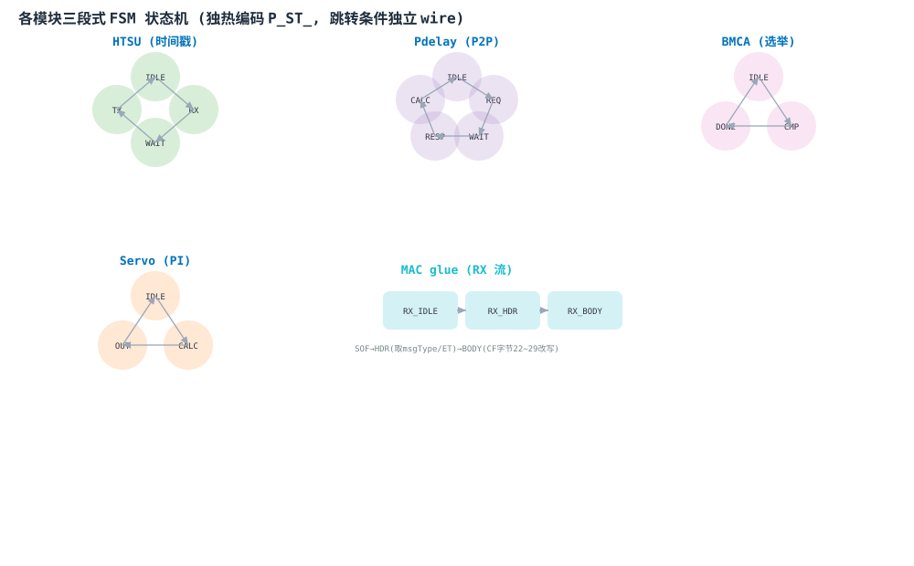
以下 8 张波形均由对应 testbench 的 .vcd 真实仿真数据渲染（非手绘示意）。每个 tb 含明确的 [PASS]/[FAIL]，任一层失败可一眼定位。分层策略由底向上：基础时钟 → 时间戳 → 透明钟 → 链路延迟 → 接口胶合 → 帧解析 → 控制面 → 执行面 → 集成 → 系统 → 适配，共 12 个测试台一次跑齐。
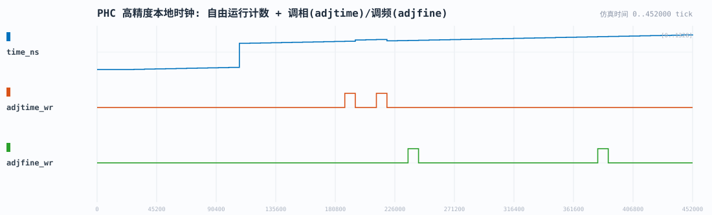
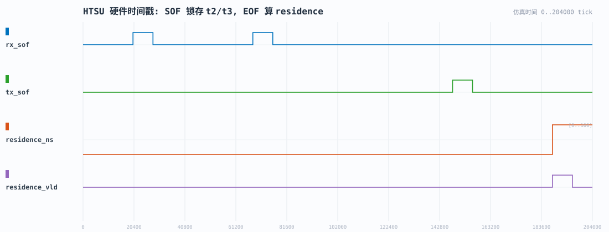
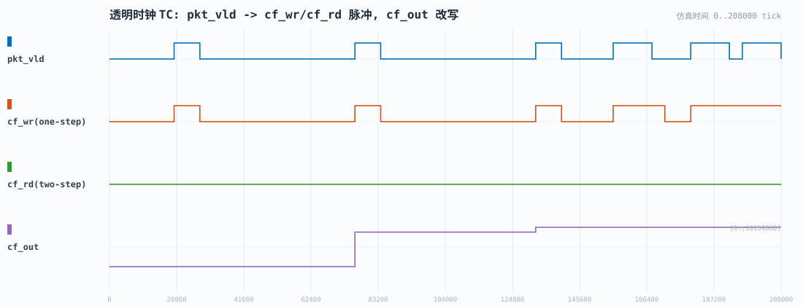
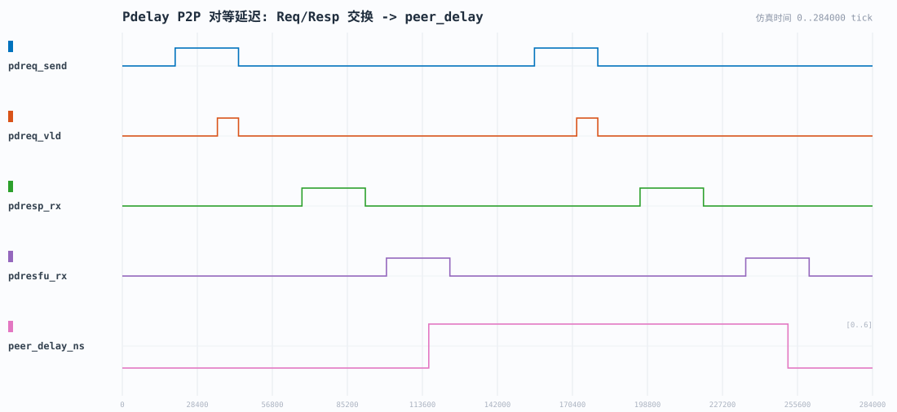
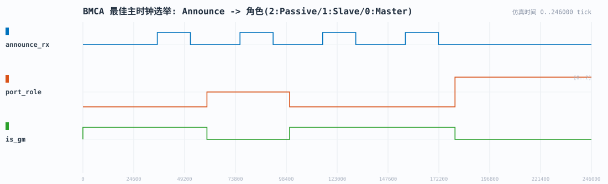
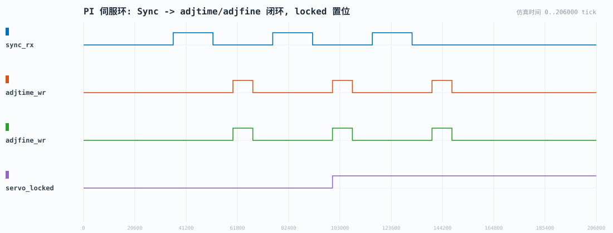
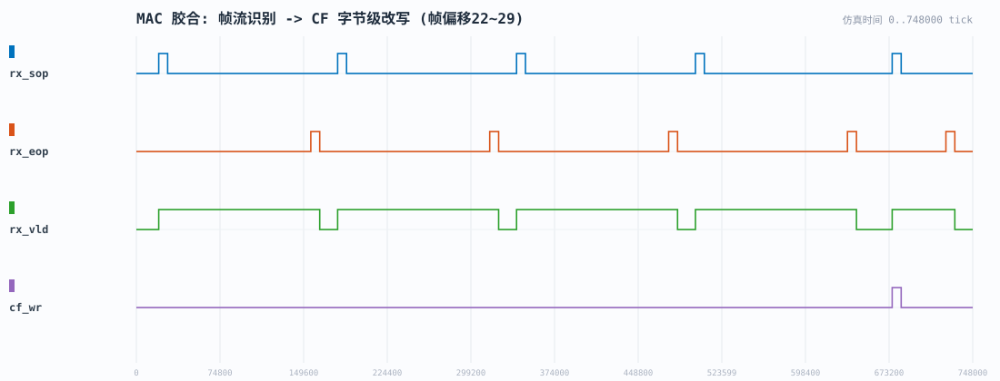
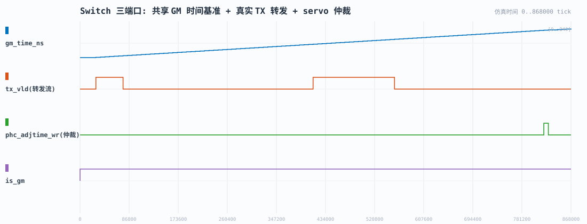
未同步时各端口独立晶振导致频率/相位发散，跨跳抖动逐跳累积；经 Servo 闭环（adjtime 消除稳态、adjfine 消除频偏）后，全网对齐到 GM 时间面，残余仅剩链路不对称（由 Pdelay 测得，约数十 ns）。
链路延迟的估计采用 802.1AS 强制的 P2P 模型。设本端发送 Pdelay_Req 时间戳为 $t_1$，对端收到时刻为 $t_2$，对端回送 Pdelay_Resp 的发送时刻为 $t_3$，本端收到时刻为 $t_4$，则单跳对等延迟为：
透明钟在每跳出端口把本跳驻留时间与 peerDelay 累加进 correctionField。correctionField 为 64 位定点数，单位 ns·$2^{16}$，故累加时把纳秒值左移 16 位：
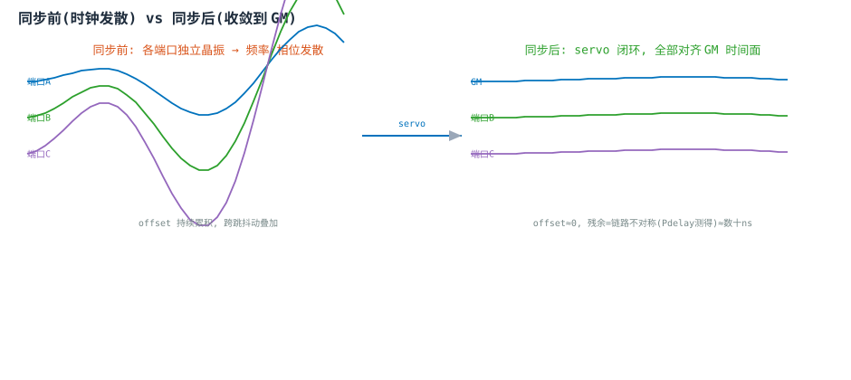
| 模块 | 职责 | 上游 | 下游 | 关键输出 |
|---|---|---|---|---|
| gptp_defines | 全局参数/报文类型/定点格式 | — | 全部 | 宏定义(无逻辑) |
| gptp_phc | 自由运行高精度时钟(DDS 分数累加) | adjtime/adjfine/settime | HTSU/TC/Servo | time_ns/time_frac |
| gptp_htsu | MAC wire-side SOF 硬打戳 t2/t3 + residence | PHC/i_rx_sof | TC | rx_ts/tx_ts/residence |
| gptp_tc | one/two-step correctionField 改写 | residence/peer_delay | MAC TX | cf_out/cf_wr/cf_rd |
| gptp_pdelay | P2P 强制对等延迟测量 | 对端 Resp/RespFU | TC/Servo | peer_delay_ns |
| gptp_bmca | 最佳主时钟选举(Best Master) | Announce | Servo/PHC owner | port_role/is_gm |
| gptp_servo | PI 闭环 offset→PHC 修正 | Sync/t1/t2/cf | PHC | adjtime/adjfine/locked |
| gptp_mac_glue | 0x88F7 解析/msgType/CF 字节改写 | MAC 字节流 | HTSU/TC | rx_sof/msg_type/cf_wr |
| gptp_frame_parser | GMII 字节流→PTP 字段提取 | MAC 字节流(CDC 后) | top/BMCA/Servo | msg_type/cf_ns/origin_ts |
| gptp_rx_fifo | 异步 FIFO 跨时钟域(MAC RX→系统) | MAC 接收时钟域 | frame_parser | 系统域字节流 |
| gptp_tx_gen | owner(GM)端口 Sync/FU/Announce 出帧 | PHC(i_enable) | MAC TX | tx_data/vld/sop/eop |
| gptp_mac_adapt | MAC IP 适配层(GMII 透传/XGMII/AXI-S 占位) | switch GMII | 真实 MAC IP | 双向透传/占位 |
| gptp_top | 单端口顶层集成 | MAC 边沿 | switch | 时间戳/CF 握手/Pdelay |
| gptp_switch | 多端口共享 PHC + 仲裁 + CDC + TX 转发 | N×top/bmca/servo | 片上 TAS 调度 | gm_time/port_role |
| 维度 | OpenTSN 原版 | 本实现 | 差异说明 |
|---|---|---|---|
| 同步算法 | E2E: ((t2+t3)-(t1+t4))/2 | P2P: ((t4-t1)-(t3-t2))/2 | 按 802.1AS 强制 Pdelay |
| 时间戳分辨率 | 125MHz → 8ns 粒度 | 125MHz + 32-bit 分数累加器 | 平均 sub-ns 频率分辨率 |
| 透明钟 | two-step(补 Follow_Up) | one-step + two-step 双模 | 在线改写 CF，无需补帧 |
| 跨时钟域 | 未明确 | 异步 FIFO(格雷码指针判空满) | 真正 MAC RX 异频跨域 |
| TX 转发 | 依赖上游 RX 透传 | owner 端口主动出帧(tx_gen) | 帧驱动真实闭环 |
| 架构映射 | PTP_CTRL/CYC_SYNC/RX_PROC/TX_PROC | PTP_CTRL→bmca, CYC_SYNC→phc, RX/TX_PROC→htsu/glue | 接口/架构对齐 FAST |
| 编码规范 | 原始 | 用户 Verilog 铁律(r_/w_/ro_/P_ST_/三段式) | 统一规范，跨项目复用 |
| 仿真验证 | — | 12 分层 tb 由底向上 + 12/12 PASS | 明确 PASS/FAIL 自检 |
P2P 强制测延迟one/two-step 双模 TC 32-bit DDS 分数时钟BMCA Passive 最优下一跳 三段式 FSM 统一共享 PHC + servo 仲裁 真实 TX 转发(非 RX 复用)异步 FIFO CDC 帧驱动真实闭环MAC IP 适配层占位 由底向上分层验证Verilog 铁律合规
任一模块缺失都将导致同步目标失效。下图给出"缺一则失效"的因果链：BMCA 选基准 → HTSU 硬打戳 → Pdelay 消不对称 → TC 抹抖动 → Servo 收敛 → glue/parser 接入帧 → PHC 统一面 → tx_gen 主动出帧闭合环路。
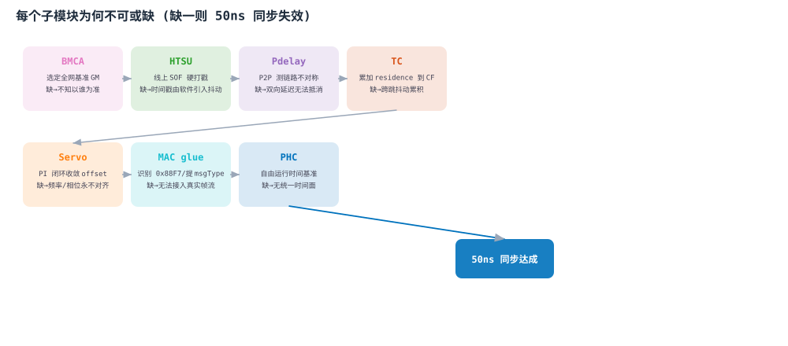
回归结果：PASS=12 FAIL=0（iverilog 12，-g2012，一次跑齐 12 个分层 tb：phc / htsu / tc / pdelay / mac_glue / frame_parser / bmca / servo / top / switch / cascade / mac_adapt）。
规范合规：14 个模块全部满足 Verilog 编码规范（端口对齐 / 分组注释 / r_·w_·ro_ 前缀 / 三段式 FSM / P_ST_ 独热 / 独立跳转条件 wire / i_clk-i_rst 异步复位 'd0 / 单信号 always / inst 组括号对齐 / 位宽基数常数）。
功能闭环：帧驱动解析、异步 FIFO CDC、真实 TX 转发、servo 仲裁、两级交换机级联（CF 链式累积 cf=e008000000、BMCA 收敛为 Slave）、Announce 周期发送+BMCA 收敛、MAC IP 适配层七项均已实现并有 tb 覆盖。
关键数值自洽：单端口集成测试 residence=40ns，对应 cf_out=2621440=$40\times 2^{16}$，HTSU 打标、TC 改写、CF 定点格式三处实现一致。
配套交付：本可视化报告（架构/状态机/波形/对比/因果链 + 7 张表）、验收报告、设计检查报告，详见 doc/ 目录。